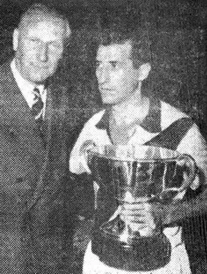

Torneio de Paris
O Torneio de Paris foi um torneio organziado pelo Racing Club de Paris entre equipes europeias e sulamericanas. O Vasco da Gama se tornou campeão de forma invicta na vitória sobre o Real Madrid de Di Stéfano bicampeão europeu.
Participantes
- Vasco
- Real Madrid
- Racing Club de Paris
- Rot-Weiss Essen
Partidas do Vasco
- 12 de junho de 1957 Vasco 3x1 Racing de Paris
- 14 de junho de 1957 Vasco 4x3 Real Madrid
Elenco vascaino na Final
- GL 1 Carlos Alberto
- LD 2 Dário
- ZG 5 Viana
- ZG 18 orlando
- LE 24 Ortunho
- VOL 4 Laerte
- VOL 20 Válter
- MC 6 Sabará
- ATA 10 Livinho
- ATA 9 Vavá
- ATA 21 Pinga
Técnico:
- Martin Francisco

Pinga com o troféu do Torneio de Paris